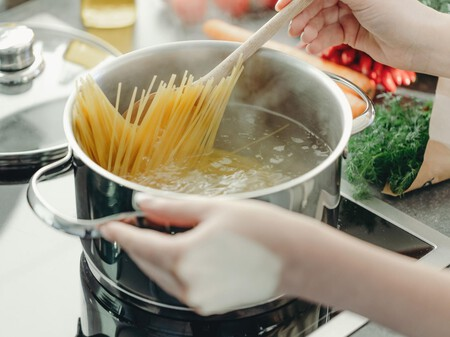
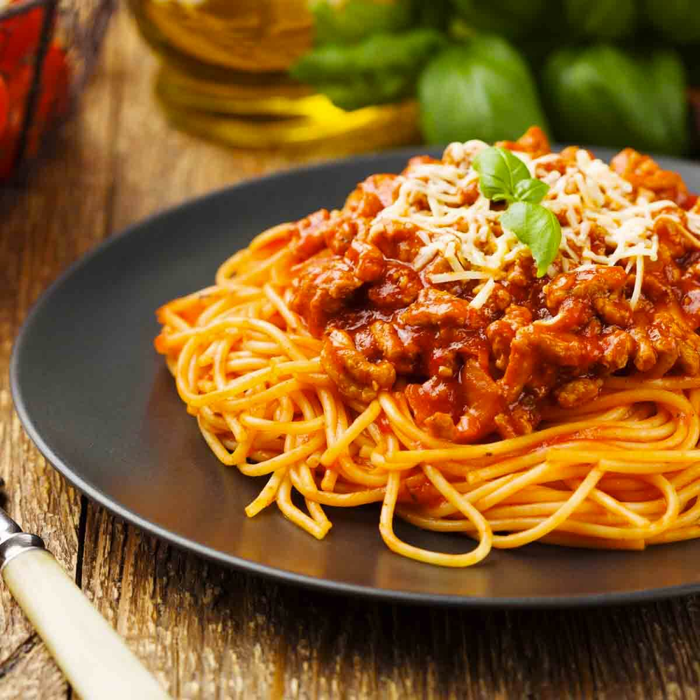

Receta de Pasta

La pasta es uno de los platos más tradicionales de Italia.
Instrucciones

1. Hervir agua en una olla grande y añadir sal.

2. Añadir la pasta a la olla y cocinar según las instrucciones del paquete.

3. Escurrir la pasta y mezclar con la salsa de tu elección.